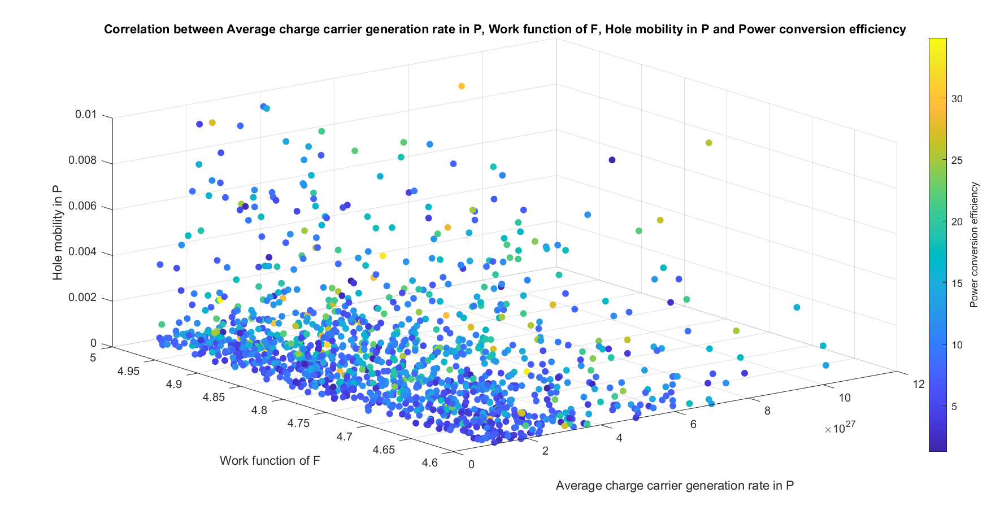
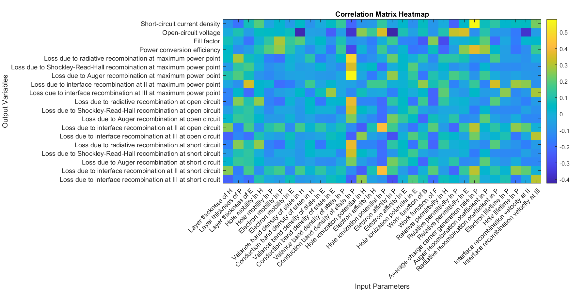
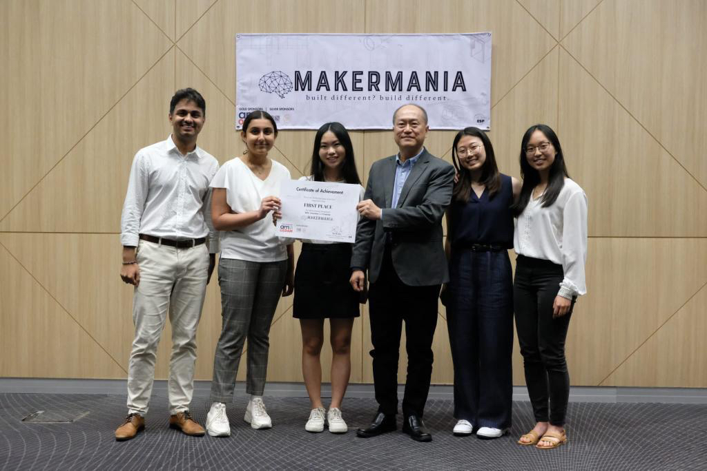

Overview Scoping Visualization Hackathon Overview This summer, I had the opportunity to conduct research at the Solar Energy Research Institute of Singapore (SERIS) at the National University of Singapore (NUS) I am grateful to be able to pursue this through ESROP Global. NUS is a top-ranked university in the Asia-Pacific region, ranking 11th worldwide. Furthermore, since I was raised in Singapore, I was excited to revisit my home country. My research focused on implementing various Machine Learning Models to predict the behavior of perovskite solar cells. The perovskite solar cell is a promising technology because of its outstanding physical properties (strong optical absorption, high charge carrier mobility and high photovoltaic conversion efficiency). In this project, we started with a large data set comprising more than a million data points generated by COMSOL simulations. ML algorithms were implemented on MATLAB to train the models and optimize hyperparameters to maximize the efficiency of the solar cell. This project alligns with my interest in Artificial Intelligence and its real-world applications. It was a great opportunity to not only learn more about energy systems and the role photovoltaics can play, but also about training and testing of neural networks—skills that are transferable to any industry. Scoping In order to prepare for this project, our team took the Standford CS231n course on Convolutional Neural Networks. and learnt more about the nerual network architecture on MATLAB by referring to the book Deep Learning with Machine Learning, Neural Networks and Artificial Intelligence by Phil Kim. We accelerated our learning by teaching one another within the team and delivering micropresentations to our professor and his PhD students - these helped fill in gaps in our understanding. The next step was a Literature Review to narrow the scope of our project - we decided to focus on 4 key outputs to determine the effectiveness of our artificial neural network (ANN) - Efficiency, Fill-factor (FF), Short-circuit voltage (Voc) and Open-circuit current (Isc). In the following weeks, we also intend to use other Machine learning algorithms, such as Support Vector Machines (SVMs), Random Forrest (RF) and XGBoost, in addition to ANNs, to compare their relative performance. Data Visualization Our data consists of 31 input parameters and 19 outputs, thus, more sophisticated techniques are required to properly interpret the data. We attempted various scatter plots, however the limiation is that it can only show 4 variables at a time - 3 for the axes and 1 for the color.  We used pearson coefficients to determine the correlation between the inputs and outputs and generated a heatmap. This helped us identify the inputs with the largest impact on key output parameters.  We also used parallel coordinate plots to identify trends - however the challenge is that with large amounts of data, the plot becomes cluttered and difficult to interpret. Hackathon - MakerMania 2023 NUS ESP During this project, I also had the opportunity to participate in a hackathon - MakerMania 2023 organized by the Engineering Science dept. at NUS. The theme was "Smart Cities" and we were tasked with developing a solution to a problem in Singapore. Notably, our team placed 1st among 45+ competing teams, winning a cash prize of $3000.  Our conceptualized and pitched a unique sensor-based waste management system to increase recycling rates in Singapore. We extensively researched current solutions, developed CAD prototypes and presented at to experts in the field and professors at NUS Engineering.. Last updated: 28th June, 2023